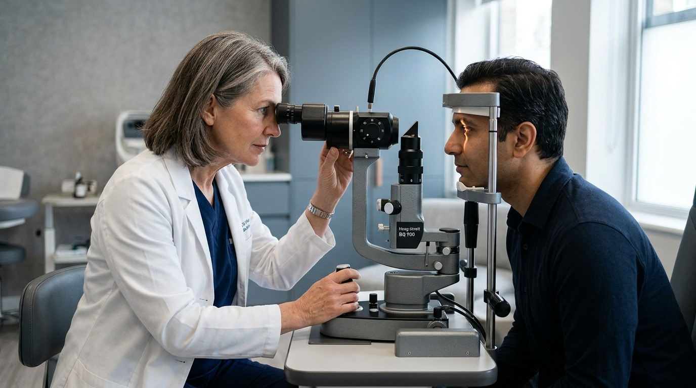
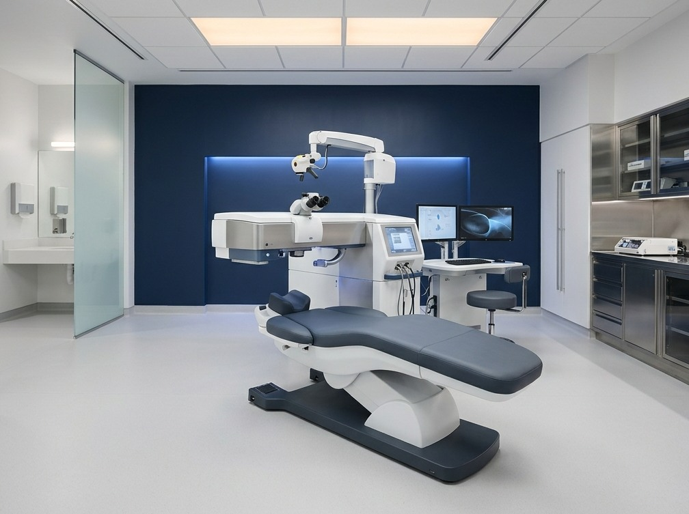
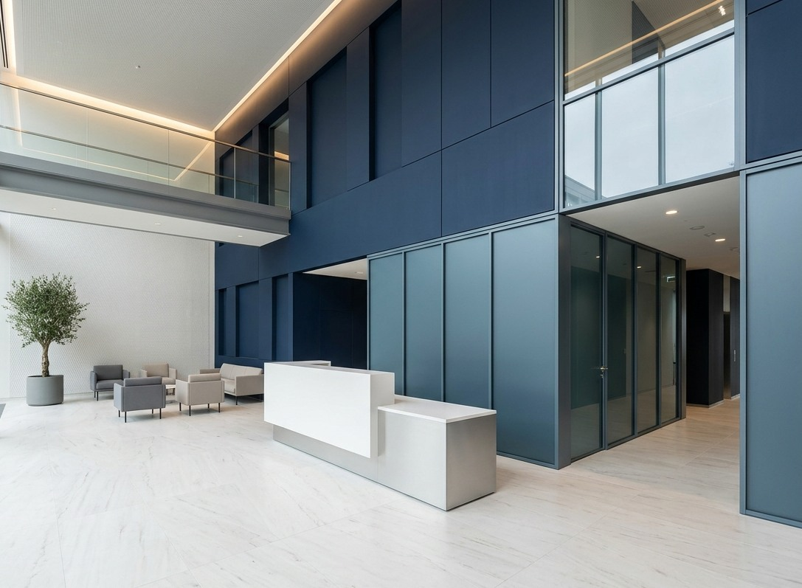
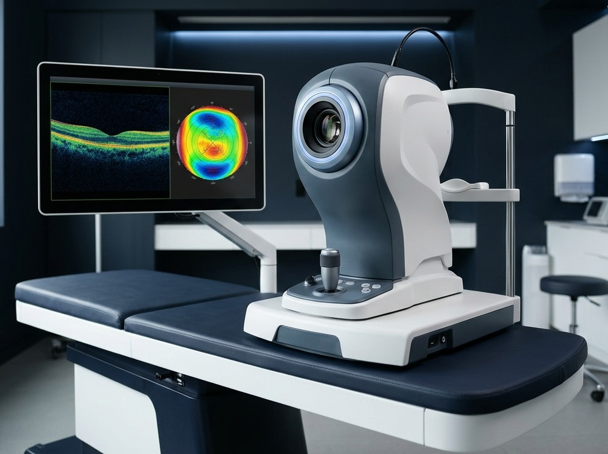

Medical Director & Cataract Chief
Dr. Alistair Vance
MD, FACS, FRCS • 24 Years Experience
Pioneer in femtosecond laser cataract surgery and complex toric/multifocal IOL implantation with over 19,000 procedures.
Experience unhurried, specialist-led ophthalmology in a calm clinical setting—from high-definition retinal diagnostics to bladeless cataract and laser vision surgery.

Select a treatment pathway below to inspect surgical duration, recovery timeline, and diagnostic technology.
Replaces the clouded natural lens through a 2.2mm self-sealing micro-incision under topical anaesthetic drops—no stitches, no eye patches.

Reshapes the corneal stroma with sub-micron excimer precision to correct myopia, hyperopia, and astigmatism without blades.
Targeted Anti-VEGF micro-injections, pattern-scan retinal laser, and 25-gauge sutureless vitrectomy guided by ultra-widefield fundus angiography.
Lowers intraocular pressure gently to halt optic nerve progression, often reducing or eliminating daily eye-drop dependency.

Every architectural detail and clinical workflow at Meridian Eye Institute eliminates unnecessary waiting while prioritizing diagnostic thoroughness.
Optical biometry, corneal topography, and retinal OCT are completed in our diagnostic wing before you meet your surgeon.
Your evaluating ophthalmologist personally performs your surgery and oversees your post-operative recovery milestones.
We recommend multifocal or refractive options only when your corneal and retinal health support optimal contrast sensitivity.
Clear surgical packages covering pre-op biometry, intraocular lens implants, theatre fees, and 90-day post-op follow-ups.
Non-invasive biometry, corneal tomography, and dilated retinal imaging establish your exact optical baseline.
Review your scans 1-on-1 with your specialist to select the ideal IOL lens or laser treatment protocol.
Performed in our Class-100 sterile suite under gentle topical anaesthetic; return home comfortably within 90 minutes.
Next-day visual acuity check followed by structured healing assessments and long-term preventive eye care.
MD, FACS, FRCS • 24 Years Experience
Pioneer in femtosecond laser cataract surgery and complex toric/multifocal IOL implantation with over 19,000 procedures.
MD, Retina Fellowship • 17 Years Exp.
Specializes in sutureless macular hole repair, diabetic retinal detachment surgery, and anti-VEGF macular protocols.
Laminar-airflow sterile theatres engineered exclusively for micro-incision cataract and vitreoretinal procedures.

Cross-sectional retinal nerve fibre and macular imaging completed in under three minutes.
Calm, child-adapted examination rooms equipped with handheld autorefractors.
Real patient experiences paired with our audited surgical safety and visual acuity benchmarks.
“Walking into Meridian felt more like entering a quiet architectural sanctuary than a hospital. Every diagnostic step was explained clearly, and my cataract recovery was effortless.â€
“My Pentacam corneal scan and laser procedure were handled with extraordinary precision. Within 24 hours my night-driving glare was gone and my distance vision was razor-sharp.â€
Bring your distance/reading glasses, contact lens boxes, and UV sunglasses for post-dilation comfort.
Include blood thinners, diabetes insulin/tablets, hypertension drops, or alpha-blocker medications.
Presented at our front concierge desk for instant cashless cataract and surgical pre-authorization.
Book directly online or speak with our surgical coordinator for same-week cataract biometry and OCT slots.
Complete your details below and our surgical coordinator will confirm your slot.